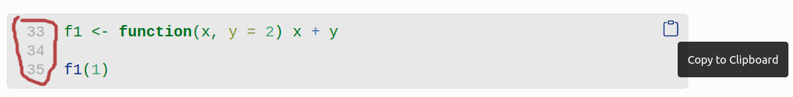
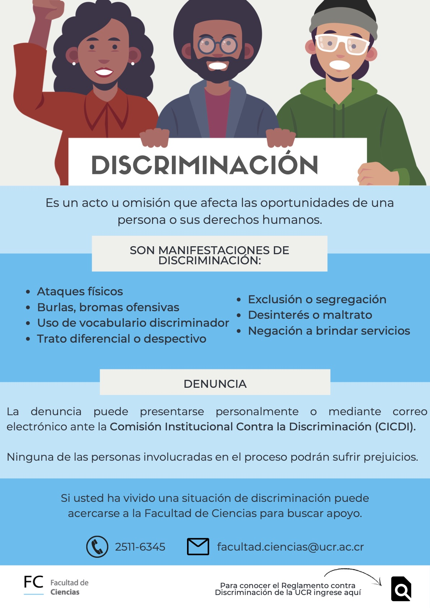

Programación y métodos estadísticos avanzados en R
Programación y métodos estadísticos avanzados en R
Este curso pretende profundizar en los elementos de programación computacional, manipulación de bases de datos, diseño experimental, graficación personalizada, y el uso de técnicas y modelaje estadístico avanzadas utilizando R como plataforma. El curso está dirigido a estudiantes avanzados de carrera, de licenciatura o postgrado. En el curso se pretende cubrir las bases de los principales análisis y técnicas de modelaje estadístico, así como análisis emergentes. Las clases mezclan las explicaciones teóricas con prácticas en donde se aplican los conceptos desarrollados . Además, durante el curso cada estudiante presentará un paquete o extensión (conjunto de herramientas aplicables a análisis específicos) de R, en donde profundizará sobre sus aplicaciones en el campo de la biología demostrando en clase en que consiste el análisis.
Objetivos
- Familiarizar al estudiante con la programación en R
- Brindar herramientas para la manipulación de bases de datos
- Emplear métodos de visualización de datos
- Cubrir algunos de los análisis estadísticos tradicionales
- Proveer a los estudiantes con experiencia en la aplicación de las herramientas brindadas por medio de prácticas y proyectos de investigación
Dinámica de las clases
- Pueden hacer preguntas en cualquier momento
- Sientanse libres de responder preguntas de compañeros
- Traten siempre de correr el código y de entender todos sus elementos
- Las líneas de código estan numeradas. Podemos usar esos números para referirnos a códigos específicos en los manuales. Los bloques de código también incluyen un botón que permite copiar el código:
- También usaremos el enlace “Compartir código” en el menú principal de este sitio (arriba) para pasar códigos que se desarrollen en clase
Consejos para garantizar el máximo aprovechamiento del curso
- Aseguráte de tener todo lo que necesitas antes del comienzo de la clase
- Tratá de estar preparado unos minutos antes del comienzo de la clase
- Intenta concentrarte al máximo en el curso, cierra otros programas o pestañas innecesarias del navegador de internet (por ejemplo, instagram, twitter, etc)
- Comentá el código
